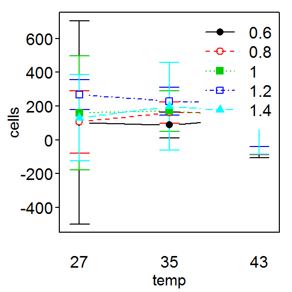
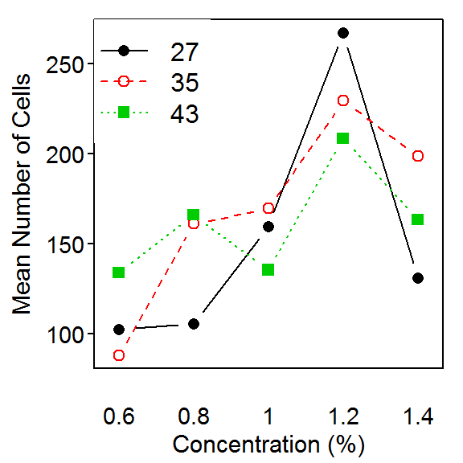
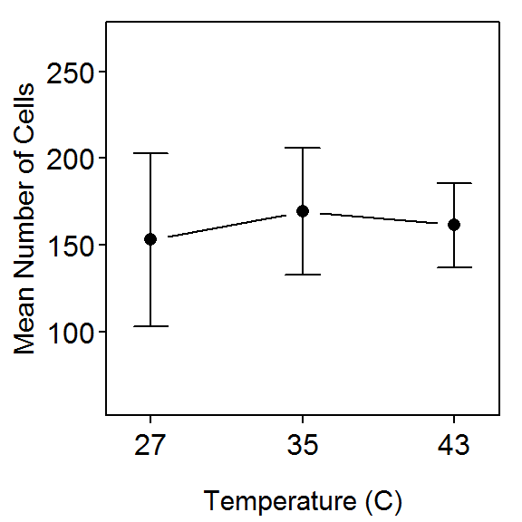
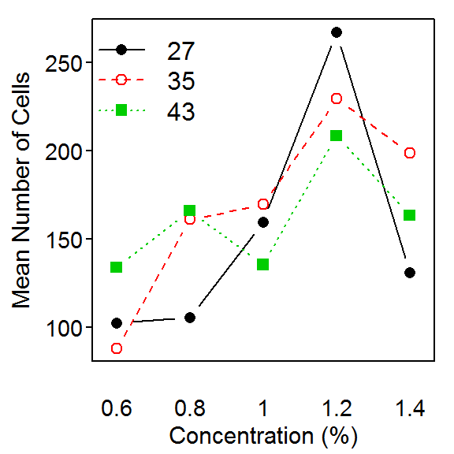
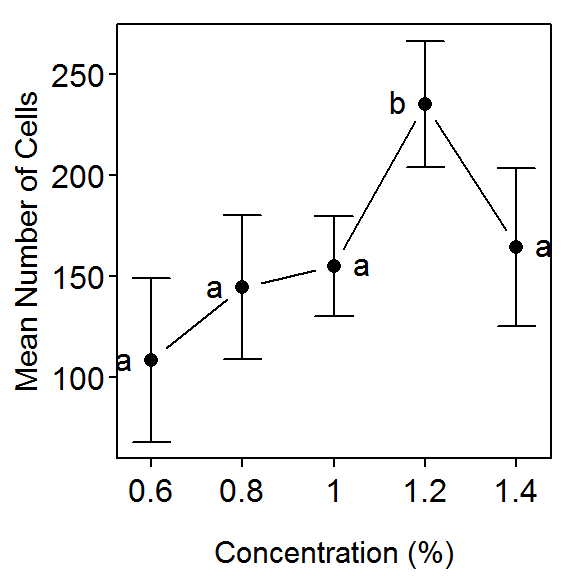
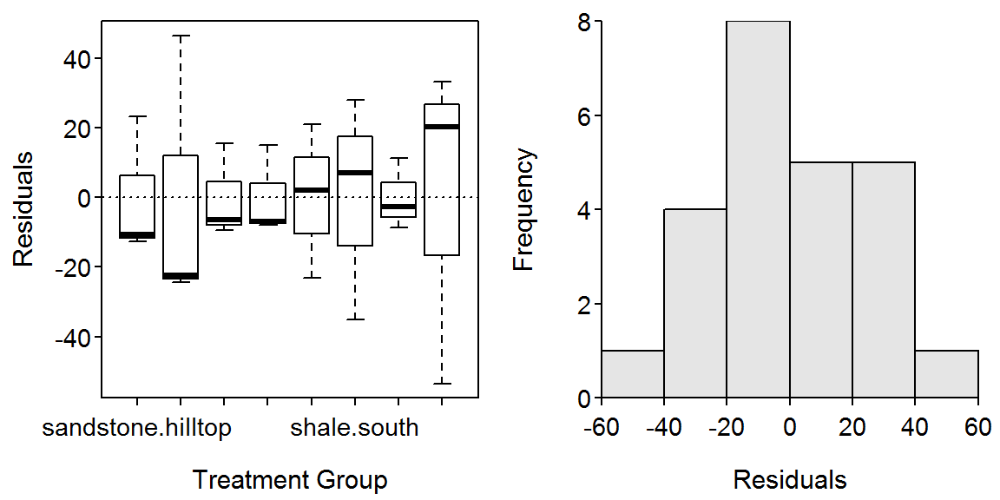

> library(NCStats)
> library(multcomp) # glht()What is the optimal temperature (27,35,43oC) and concentration (0.6,0.8,1.0,1.2,1.4% by weight) of the nutrient, tryptone, for culturing the
> setwd("C:/aaaWork/Web/GitHub/NCMTH207/modules/Anova-2Way")
> bact <- read.csv("Bacteria.csv")
> str(bact)'data.frame': 30 obs. of 3 variables:
$ temp : int 27 27 27 27 27 35 35 35 35 35 ...
$ conc : num 0.6 0.8 1 1.2 1.4 0.6 0.8 1 1.2 1.4 ...
$ cells: int 55 120 186 260 151 82 166 179 223 178 ...> bact$ftemp <- factor(bact$temp)
> bact$fconc <- factor(bact$conc)
> str(bact)'data.frame': 30 obs. of 5 variables:
$ temp : int 27 27 27 27 27 35 35 35 35 35 ...
$ conc : num 0.6 0.8 1 1.2 1.4 0.6 0.8 1 1.2 1.4 ...
$ cells: int 55 120 186 260 151 82 166 179 223 178 ...
$ ftemp: Factor w/ 3 levels "27","35","43": 1 1 1 1 1 2 2 2 2 2 ...
$ fconc: Factor w/ 5 levels "0.6","0.8","1",..: 1 2 3 4 5 1 2 3 4 5 ...> sumTable(cells~ftemp*fconc,data=bact,FUN=length) 0.6 0.8 1 1.2 1.4
27 2 2 2 2 2
35 2 2 2 2 2
43 2 2 2 2 2> sumTable(cells~ftemp*fconc,data=bact,FUN=mean,digits=0) 0.6 0.8 1 1.2 1.4
27 102 106 160 267 131
35 88 161 170 230 198
43 134 166 136 208 164> sumTable(cells~ftemp*fconc,data=bact,FUN=sd,digits=1) 0.6 0.8 1 1.2 1.4
27 67.2 20.5 37.5 9.9 28.3
35 8.5 7.1 13.4 9.2 29.0
43 26.9 28.3 0.7 27.6 27.6> lm1 <- lm(cells~ftemp*fconc,data=bact)
> anova(lm1)Analysis of Variance Table
Response: cells
Df Sum Sq Mean Sq F value Pr(>F)
ftemp 2 1313 656.4 0.8557 0.44473
fconc 4 51596 12899.1 16.8154 2.041e-05
ftemp:fconc 8 14703 1837.8 2.3958 0.06886
Residuals 15 11507 767.1 > fitPlot(lm1, main="") # left
> fitPlot(lm1,interval=FALSE,change.order=TRUE,xlab="Concentration (%)",
ylab="Mean Number of Cells",legend="topleft", main="") # right
> fitPlot(lm1,which="ftemp",ylim=c(60,270),xlab="Temperature (C)",
ylab="Mean Number of Cells", main="") # left
> fitPlot(lm1,which="fconc",ylim=c(60,270),xlab="Concentration (%)",
ylab="Mean Number of Cells", main="") # right
> bact.mc1 <- glht(lm1,mcp(fconc="Tukey"))Warning in mcp2matrix(model, linfct = linfct): covariate interactions found -- default
contrast might be inappropriate> summary(bact.mc1)
Simultaneous Tests for General Linear Hypotheses
Multiple Comparisons of Means: Tukey Contrasts
Fit: lm(formula = cells ~ ftemp * fconc, data = bact)
Linear Hypotheses:
Estimate Std. Error t value Pr(>|t|)
0.8 - 0.6 == 0 3.0 27.7 0.108 0.999965
1 - 0.6 == 0 57.0 27.7 2.058 0.287153
1.2 - 0.6 == 0 164.5 27.7 5.939 0.000213
1.4 - 0.6 == 0 28.5 27.7 1.029 0.838163
1 - 0.8 == 0 54.0 27.7 1.950 0.334974
1.2 - 0.8 == 0 161.5 27.7 5.831 0.000273
1.4 - 0.8 == 0 25.5 27.7 0.921 0.884519
1.2 - 1 == 0 107.5 27.7 3.881 0.010956
1.4 - 1 == 0 -28.5 27.7 -1.029 0.838177
1.4 - 1.2 == 0 -136.0 27.7 -4.910 0.001521
(Adjusted p values reported -- single-step method)> fitPlot(lm1,which="fconc",xlab="Concentration (%)",ylab="Mean Number of Cells",main="")
> addSigLetters(lm1,which="fconc",lets=c("a","a","a","b","a"),pos=c(2,2,4,2,4))
Soil phosphorous is important for the invasion of native vegatation by exotic weeds. Clements (1983) studied the soil phosphorous in the Sydney region (Australia) to determine how soil phosphorous varied with topographical location and soil type. Bushland sites were chosen in Brisbane Waters National Park, Ku-ring-gai Chase National Park and Royal National Park. These areas were relatively unaffected by suburban development, were free from immediate roadside or track effects, and had not been burned for at least two years. Shale-derived and sandstone-derived soils in four topographic locations were examined with three 250 m2 quadrats in each of the eight combinations of soil type and topography. Cores of soil of 75 mm depth and 25 mm diameter, free from surface litter, were collected from each of five randomly selected points in each quadrat. The five soil samples were pooled and the total soil phosphorous (ppm) was determined for each pooled sample. Determine the effect of soil type and topography on total soil phosphorous level.
> sp <- read.csv("SoilPhosphorous.csv")
> str(sp)'data.frame': 24 obs. of 3 variables:
$ soil: Factor w/ 2 levels "sandstone","shale": 2 2 2 2 2 2 2 2 2 2 ...
$ topo: Factor w/ 4 levels "hilltop","north",..: 4 4 4 2 2 2 3 3 3 1 ...
$ phos: int 98 172 185 78 77 100 117 54 96 83 ...> lm1 <- lm(phos~soil*topo,data=sp)
> levenesTest(lm1)Levene's Test for Homogeneity of Variance (center = median)
Df F value Pr(>F)
group 7 0.3741 0.9043
16 > residPlot(lm1)
> adTest(lm1$residuals)Anderson-Darling normality test with x
A = 0.2126, p-value = 0.8351> outlierTest(lm1)
No Studentized residuals with Bonferonni p < 0.05
Largest |rstudent|:
rstudent unadjusted p-value Bonferonni p
1 -2.824098 0.012821 0.30769> anova(lm1)Analysis of Variance Table
Response: phos
Df Sum Sq Mean Sq F value Pr(>F)
soil 1 17876.0 17876.0 22.9818 0.0001988
topo 3 9693.8 3231.3 4.1542 0.0235128
soil:topo 3 11390.8 3796.9 4.8814 0.0134826
Residuals 16 12445.3 777.8 > sp$comb <- sp$soil:sp$topo
> view(sp) soil topo phos comb
1 shale valley 98 shale:valley
4 shale north 78 shale:north
8 shale south 54 shale:south
10 shale hilltop 83 shale:hilltop
19 sandstone south 28 sandstone:south
23 sandstone hilltop 21 sandstone:hilltop> lm1a <- lm(phos~comb,data=sp)
> anova(lm1a)Analysis of Variance Table
Response: phos
Df Sum Sq Mean Sq F value Pr(>F)
comb 7 38961 5565.8 7.1555 0.0005729
Residuals 16 12445 777.8 > spint.mc <- glht(lm1a, mcp(comb="Tukey"))> summary(spint.mc)
Simultaneous Tests for General Linear Hypotheses
Multiple Comparisons of Means: Tukey Contrasts
Fit: lm(formula = phos ~ comb, data = sp)
Linear Hypotheses:
Estimate Std. Error t value Pr(>|t|)
sandstone:north - sandstone:hilltop == 0 1.667 22.772 0.073 1.000
sandstone:south - sandstone:hilltop == 0 19.333 22.772 0.849 0.987
sandstone:valley - sandstone:hilltop == 0 -4.000 22.772 -0.176 1.000
shale:hilltop - sandstone:hilltop == 0 4.667 22.772 0.205 1.000
shale:north - sandstone:hilltop == 0 53.333 22.772 2.342 0.330
shale:south - sandstone:hilltop == 0 57.333 22.772 2.518 0.255
shale:valley - sandstone:hilltop == 0 120.000 22.772 5.270 <0.01
sandstone:south - sandstone:north == 0 17.667 22.772 0.776 0.992
sandstone:valley - sandstone:north == 0 -5.667 22.772 -0.249 1.000
shale:hilltop - sandstone:north == 0 3.000 22.772 0.132 1.000
shale:north - sandstone:north == 0 51.667 22.772 2.269 0.365
shale:south - sandstone:north == 0 55.667 22.772 2.445 0.285
shale:valley - sandstone:north == 0 118.333 22.772 5.196 <0.01
sandstone:valley - sandstone:south == 0 -23.333 22.772 -1.025 0.963
shale:hilltop - sandstone:south == 0 -14.667 22.772 -0.644 0.997
shale:north - sandstone:south == 0 34.000 22.772 1.493 0.801
shale:south - sandstone:south == 0 38.000 22.772 1.669 0.706
shale:valley - sandstone:south == 0 100.667 22.772 4.421 <0.01
shale:hilltop - sandstone:valley == 0 8.667 22.772 0.381 1.000
shale:north - sandstone:valley == 0 57.333 22.772 2.518 0.255
shale:south - sandstone:valley == 0 61.333 22.772 2.693 0.194
shale:valley - sandstone:valley == 0 124.000 22.772 5.445 <0.01
shale:north - shale:hilltop == 0 48.667 22.772 2.137 0.433
shale:south - shale:hilltop == 0 52.667 22.772 2.313 0.344
shale:valley - shale:hilltop == 0 115.333 22.772 5.065 <0.01
shale:south - shale:north == 0 4.000 22.772 0.176 1.000
shale:valley - shale:north == 0 66.667 22.772 2.928 0.131
shale:valley - shale:south == 0 62.667 22.772 2.752 0.176
(Adjusted p values reported -- single-step method)> glhtSig(spint.mc)[1] "shale:valley - sandstone:hilltop" "shale:valley - sandstone:north"
[3] "shale:valley - sandstone:south" "shale:valley - sandstone:valley"
[5] "shale:valley - shale:hilltop" > fitPlot(lm1,change.order=TRUE,interval=FALSE,main="",ylim=c(20,160),
ylab="Mean Phosphorous Level",xlab="Topographic Location",legend="topleft")
> addSigLetters(lm1,change.order=TRUE,lets=c("a","a","a","ab","a","ab","a","b"),
pos=c(1,3,1,3,1,1,3,1))